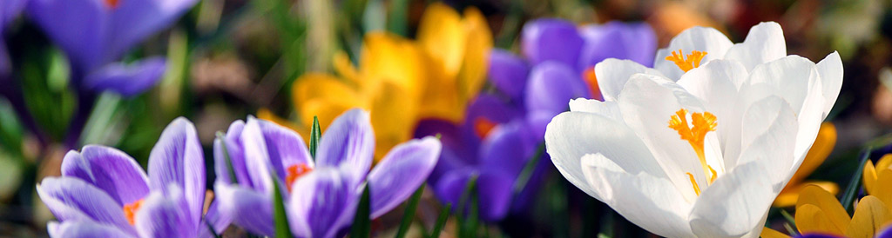
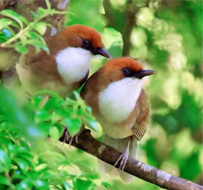
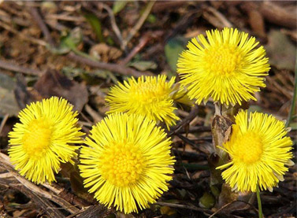
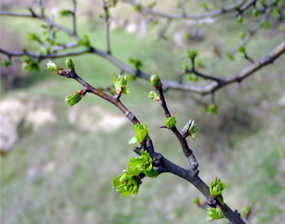

Весна самое долгожданное время года, когда природа пробуждается, земля умывается дождями, зеленеющие листочки тянутся к прибавляющему солнцу. Весна состоит из трех месяцев: март, апрель и май.
Три весенних месяца от первых лучей марта, обильного снеготаяния апреля, до радостного пробуждения природы мая. За это время природа успевает очиститься от томных снежных оков, земля пропитывается влагой и умывается свежим дождем, а весь животный и растительный мир готовится к периоду роста и цветения.
  